Emergence
The rules never mention gliders, guns, or movement. Those things appear anyway. When large-scale behavior comes out of simple local rules, it is called emergence. Ant colonies, bird flocks, and traffic jams work the same way.
Cellular Automata · Lesson 09
Four rules on a grid of squares are enough to produce gliders, guns, chaos, and a working computer. In this lesson you learn the rules by hand, predict what happens next, collect a zoo of patterns, and then write rules of your own.
Click or drag to draw cells, then press Start. Or pick a stamp in the side panel and click to place it.
Generation: 0
Live Cells: 0
Oldest Cell: 0
Population Δ: 0
Beginner: 20 x 20, slower pace for first-time learners.
Tip: Click or drag on the grid to toggle cells before pressing Start.
newborn cells glow blue cells older than 50 generations turn gold, so still lifes stand out.
Part 1
A question about self-copying machines turned into a game played on graph paper.
Von Neumann's grid had 29 states per cell and a rulebook hundreds of pages long. It proved self-copying was possible, but it was far too complicated to play with.
Mathematician John Horton Conway spent about 18 months at Cambridge testing rules on a Go board. He wanted the simplest rule that was still unpredictable. Patterns should not all die, and they should not all explode. He settled on just two states (alive or dead) and one rule about neighbors.
Gardner described the game in his "Mathematical Games" column in Scientific American. Readers all over the world started running it by hand and on early computers. Conway offered a $50 prize to anyone who could prove a pattern could grow forever. Bill Gosper's team at MIT won it within weeks with the glider gun.
Von Neumann needed 29 states and Conway needed 2. Why would a scientist want the simplest rule that still does something interesting?
Part 2
Every cell looks only at its eight touching neighbors, called its Moore neighborhood.
Scientists write this rule in a short code: B3/S23, which means born on 3, survive on 2 or 3. This rule notation is how you will write your own rules in Part 6.
The key detail: every cell updates at the same moment. You count all the neighbors on the old grid, then draw the whole new grid. One full update is one generation.
Click the outer squares to add or remove neighbors. Click the center to switch it between alive and dead. Predict the result before you read it.
Live neighbors: 0
Use the explorer to fill in a table: for a live center, which neighbor counts from 0 to 8 keep it alive? For a dead center, which counts give birth? Your table should match B3/S23.
Part 3
Work it out by hand, like people did in 1970. Then check your answer.
Now (generation 0)
Your prediction (generation 1): click cells
correct should be alive (missed) should be dead (extra)
Do not move cells around in your head. Go square by square: count the live neighbors on the old grid, then apply the rule. Remember to check the empty squares next to the pattern, since that is where births happen.
Part 4
Life players sort patterns by how they behave over time. Click a picture to enlarge it, or press "Run it" to watch it in the studio.
Every live cell has 2 or 3 neighbors, and no empty cell has exactly 3. The grid is frozen.
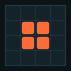
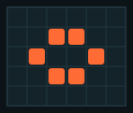
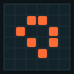
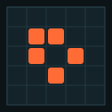
They cycle through shapes and come back to the start. The number of generations in one cycle is the period.
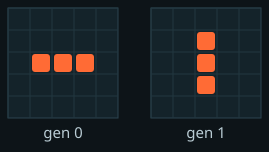
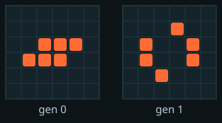
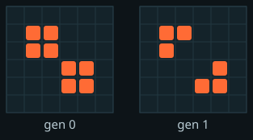
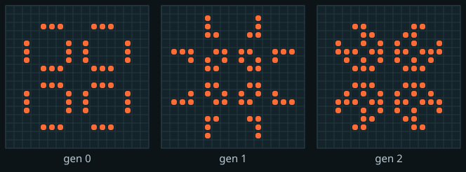
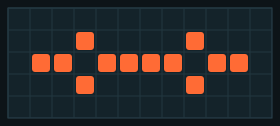
They come back to their starting shape, but in a new place. In Life, nothing can move faster than one cell per generation. Players call that speed c, "the speed of light."
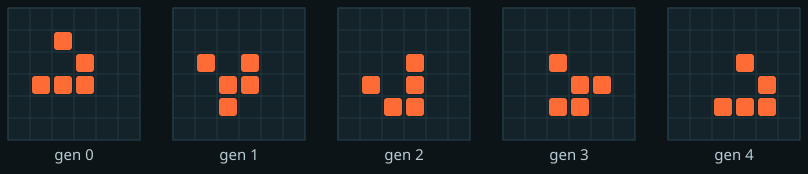
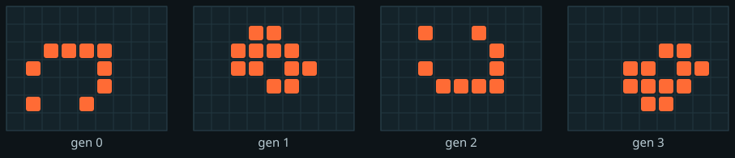

Run the pentadecathlon and press Step until it looks exactly like the start again. Write down the period you measured. Then do the same for the glider: after how many steps is it the same shape again, and how far did it move?
Part 5
Small starts can have huge, unpredictable futures.
A methuselah is a tiny pattern that keeps churning for a very long time before it settles down. There is no shortcut for predicting what it will do. The only way to find out is to run it step by step. That is one of the deepest ideas in Life.
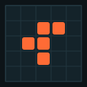
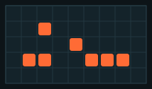
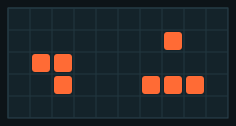
The famous numbers come from an unlimited grid. The studio's advanced grid is 60 × 60 and wraps around, so gliders fly off one edge and come back on the other, where they crash into the debris. A model's boundary changes its results. Scientists have to think about this whenever they simulate something inside a limited box.
Run diehard and watch the Live Cells counter. Does it die at generation 130 here too? Then run the R-pentomino and write down the generation where it settles. Why is your number different from 1,103?
Part 6
B3/S23 is just one of 262,144 possible "Life-like" rules. Try a few others.
Each rule is a choice of which neighbor counts (0–8) give birth and which let a cell survive. Two lists of 9 yes/no choices give 218 = 262,144 rules. Most of them are boring: everything dies or everything fills in. Conway picked B3/S23 because it sits on the edge between the two.
B3/S23Life. Balanced. Gliders, guns, and long chaos.B36/S23HighLife. Like Life, plus birth on 6. It has a famous pattern that copies itself.B2/SSeeds. Every live cell dies immediately, yet the pattern explodes.B3/S12345Maze. Grows long corridors like a maze.B3678/S34678Day & Night. Live and dead act the same: flip every cell and the rule still works.B1/S1Gnarl. One live cell becomes a growing fractal-like crystal.To type your own, open the side panel, set Rule Set to Custom, and enter a code like B35/S236.
Find a custom rule where a random soup neither dies out nor fills the whole grid within 200 generations. Write down your rule code and describe what you see.
Part 7
A toy on a grid turned into a tool for thinking about computers, biology, and AI.
The rules never mention gliders, guns, or movement. Those things appear anyway. When large-scale behavior comes out of simple local rules, it is called emergence. Ant colonies, bird flocks, and traffic jams work the same way.
In 1982 Conway and others showed that Life is Turing complete. Streams of gliders act like signals, and glider collisions act like logic gates (AND, OR, NOT). With enough space, Life can run any program. People have since built a working clock, a prime-number generator, and even Life running inside Life.
Because Life can compute anything, there is no general shortcut for predicting its future. For some patterns, the only way to know if they ever stop is to run them. This is the same limit Alan Turing found for computer programs (the halting problem).
Scientists use cellular automata to model forest fires, the spread of disease, traffic, crystal growth, and the patterns on seashells. Each model chooses what a cell stands for, which states it can have, and a local rule.
In 2020, researchers trained "neural cellular automata." Instead of a person writing the rule, a small neural network learns it. Starting from one cell, the grid grows into a picture, such as a lizard, and can repair itself when part is erased, a little like a living thing healing.
Part 8
Pick one path and turn what you learned into something you can hand in.
Bonus: find a pattern that is not in this lesson and look it up on LifeWiki to learn its name.
Answer each question, then read the explanation.